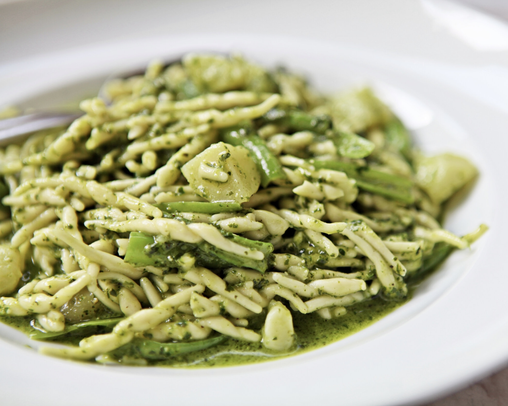

Please select one of these classic Italian dishes to see the full recipe.(click on the image)
|  Trofie with Sicilian pesto - Easy recipe with typical Italian pasta and rich cream of fresh basil (serves 4 people) Cooking time: 10 minutes |
 Grilled ricotta bruschetta with sweet and sour tomatoes -
Grilled ricotta bruschetta with sweet and sour tomatoes -Typical antipasto with fresh ingredients and delicious flavours. (serves 4 people) Cooking time: 5 minutes |
 Eggplant parmesan (parmigiana di melanzane) -
Eggplant parmesan (parmigiana di melanzane) - Authentic italian dish that includes fried eggplants baked in a dish with tomato sauce, basil, parmesan and mozzarella cheese. Cooking time: 2hours and 15 minutes |
 Semolina gnocchi (Gnocchi alla Romana) -
Semolina gnocchi (Gnocchi alla Romana) - With a crispy outside and soft, buttery, cheesy texture in the inside, it is a typical delicious italian comfort food that is easy to prepare. (serves 4-6 people) Cooking time: 1 hour and 45 minutes |
|
Chicken scaloppine with mushrooms (Scaloppine con funghi) - Tasty chicken breast served with a creamy mushroom sauce Cooking time: 20 minutes |